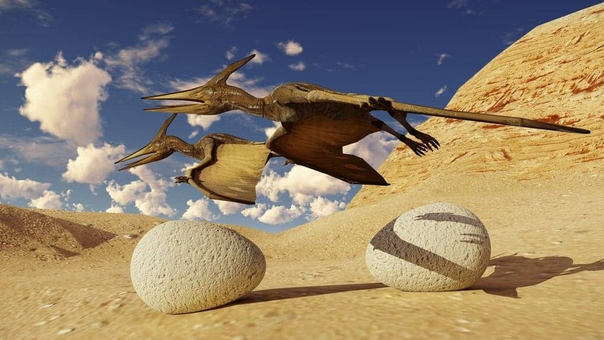
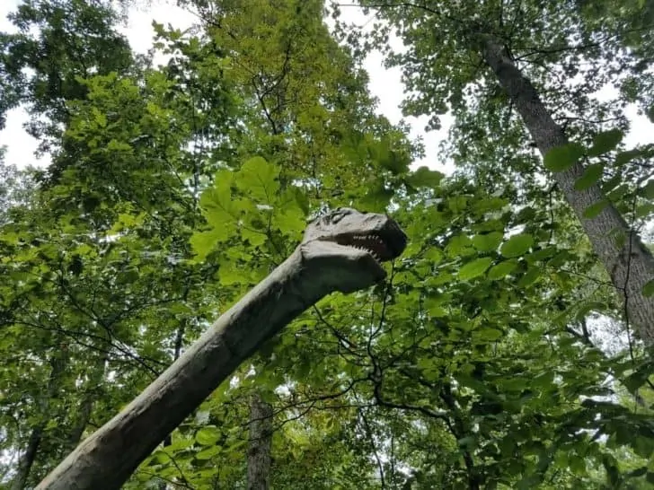
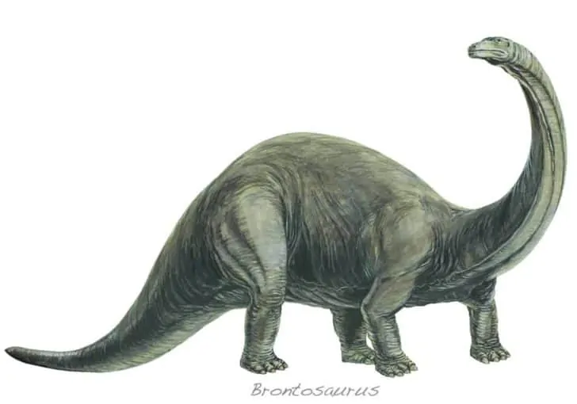

The Dinosaur Museum Home Login About us Contact Us
Pterodactyl
Pterodactyl is the image that conjures up in your mind when you think about a flying dinosaur. Almost all winged dinosaurs portrayed in modern fiction have been inspired by this giant bird-dino, which resided in Europe and Africa. If you are wondering what it would have been like to ride one of these creatures, we’ve got bad news for you. New research suggests that owing to its unique anatomy, your dragon-dino was not able to not take off!

| Comment: |
Iguanodon
Iguanodon was perhaps the first dinosaur identified by the scientists. The discovery was made when local workers unearthed fossil teeth in British forest. They took their findings to the neighborhood doctor, Gideon Mantell, who realized that they were not dealing with something ordinary.
Iguanodon is believed to be a herbivore. In the lands now known as Europe, North Africa, North America, Australia, and Asia, these giant dinosaurs ran around on two legs.
They had claws with fingers that would have been useful for cutting plants or fighting off predators. They roamed the Erath some 161.2 million to 99.6 million years ago, during the late Jurassic and early Cretaceous eras.

Comment:
Brontosaurus
The name “Brontosaurus” comes from the Greek language and translates to “thunder lizard”. These dinosaurs are quite famous in Hollywood. In fact, this species of dinosaurs was not only featured in films and other types of fiction but also managed to make their way to postal stamps!With their thin, long neck and giant bulky torso, the Brontosaurus was a herbivore. The various species of Brontosaurus roamed in what is now known as North America. These giants were around 22 meters long and weighed up to 17 tons.
To give you a better idea about how massive they were, did you know that the heaviest of elephants weigh only around 6 – 7 tons and grows up to only 3.2 meters?

| Comment: |